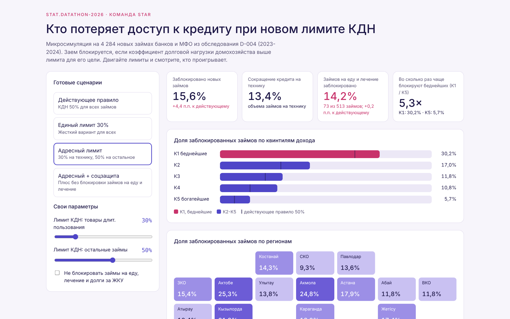

STAT.DATATHON-2026 · Трек Data to Policy
Микросимуляция ужесточения долговой нагрузки (КДН) по данным обследования домохозяйств D-004, 2023-2024
Команда STAR
Джафарли Искендер Анар оглы
Руководитель команды
Университет АДА, Школа информационных технологий и инженерии (SITE), Баку, Азербайджан
Садыгова Назпери Агали гызы
Московский государственный университет имени М. В. Ломоносова, Факультет менеджмента, Баку, Азербайджан
Иманов Юнус Фариз оглы
Хельсинкский университет, Департамент математики и статистики, Хельсинки, Финляндия
1. cover [Спикер 1 · 0:00-0:15] Добрый день! Мы команда STAR из Баку и Хельсинки. Наш вопрос: кто проиграет, если государство ужесточит лимит на потребительские кредиты? И можно ли сделать это, не ударив по самым уязвимым?
Главное
33%
беднейших заемщиков уже отдают долгам больше половины дохода. Любой единый лимит бьет прежде всего по ним
3,5×
выше шансы пойти к частникам и в ломбард у тех, кто занимает на еду и лечение. Отказ банка толкает их в тень
24→14%
блокировок займов на базовые нужды, если лимит 30% ввести только для товаров длительного пользования. Эффект на кредит тот же
Рекомендация: адресный лимит КДН 30% только для займов на товары длительного пользования
D-004 2023-2024, синтетические данные БНС; 96 000 домохозяйство-кварталов, 4 284 новых займа банков и МФО
2. summary [Спикер 1 · 0:15-0:45] Сразу главное, три вывода. Первое: треть беднейших заемщиков уже отдает долгам больше половины дохода. Второе: у тех, кто занимает на еду и лечение, шансы пойти к частникам и в ломбард в три с половиной раза выше. Отказ банка толкает их в тень. Третье: мы нашли адресный вариант лимита, который дает регулятору тот же эффект, но не увеличивает отказы по займам на базовые нужды. Теперь подробнее.
Контекст политики
50%
Платежи по долгам не более половины дохода заемщика
8×
Общий долг не более 8 годовых доходов; АРРФР предлагает ниже для беззалоговых кредитов
Риск
МВФ (2025): меры должны быть адресными, чтобы кредитование не ушло из регулируемого сектора
Наш вопрос: если лимит КДН снизить с 50% до 40% или 30%, кто потеряет доступ к кредиту и куда он пойдет?
Источники: bes.media (май 2026), МВФ, заявление миссии по статье IV (ноябрь 2025)
3. context [Спикер 1 · 0:45-1:10] Контекст. Сегодня платежи по долгам не могут превышать 50 процентов дохода. С 2027 года добавится лимит общего долга: не больше восьми годовых доходов, и АРРФР предлагает быть еще строже. МВФ предупреждает: меры должны быть адресными, иначе кредит уходит из банков. Поэтому мы проверили, что будет, если лимит платежей снизить до 40 и 30 процентов.
Данные и метод
kv_vopr0 (регион, город/село), kv_vopr11 (доходы), kv_vopr12 (займы: цель, источник, платежи), kv_vopr1-7 (непродовольственные расходы)
Размер домохозяйства для дохода на душу и квинтилей; удовлетворенность жизнью (1-10). Склейка по NOMER
Нет общего ключа с D-серией, поэтому только на уровне региона: уровень занятости 15-64 лет
КДН = платежи по займам / доход за квартал. Правило применяется к банкам и МФО; новый заем блокируется, если КДН выше лимита
Python (pandas, statsmodels): МНК с кластеризацией по домохозяйству, логит-модели, микросимуляция при лимитах 20-70%. Код воспроизводим.
Синтетические микроданные БНС, 2023-2024. Коды платежей 2.1.1.4.1 и 2.1.1.4.2 требуют сверки с кодовой книгой
4. data [Спикер 1 · 1:10-1:30] Данные: обследование D-004, 12 тысяч домохозяйств за 8 кварталов, 96 тысяч наблюдений. Мы связали доходы семьи, ее займы, их цель и источник, а для регионов добавили занятость из T-001. Для каждой семьи считаем КДН: платежи по займам, деленные на доход.
Результат 1 · Дескриптивный анализ
28%
домохозяйств вносят платежи по займам в каждом квартале
15,5%
медианный КДН среди тех, кто платит
14,4%
платящих отдают по долгам больше половины дохода
5,9%
берут новый заем за квартал
Среди новых займов банков и МФО: 11,2% выданы домохозяйствам, у которых КДН уже выше 50%. Либо правило обходится, либо доход в обследовании занижен; это стоит проверить на реальных данных.
D-004, 2023-2024, 96 000 домохозяйство-кварталов, без весов. КДН = платежи / доход за квартал
5. r1 [Спикер 1 · 1:30-1:50] Больше четверти домохозяйств платят по займам, медианный КДН у них 15 процентов. Но у каждого седьмого платящего на долги уходит больше половины дохода. И деталь: 11 процентов новых займов банков и МФО уже выдаются семьям сверх действующего лимита.
Результат 1 · Новые займы
Товары длит. польз.
51,1
Прочее
24,6
Продукты питания
9,7
Строительство дома
4,6
Здоровье, лекарства
3,6
Покупка жилья
2,9
Образование
2,2
Долги за ЖКУ
1,0
Коммерческий банк
71,8
Частное лицо
13,5
МФО
7,7
Прочее
4,8
Ломбард
1,8
Розовым: базовые нужды (еда, лечение, долги за ЖКУ) и неформальные источники (частное лицо, ломбард)
D-004 kv_vopr12, вопросы 2.1 и 2.2, 2023-2024; доля ответов. Коды по форме Д-004
6. r1b [Спикер 1 · 1:50-2:10] На что занимают? Половина новых займов берется на технику и мебель. Но каждый седьмой заем на еду, лечение или долги за коммуналку. И около 15 процентов займов приходят не из банка, а от частных лиц и ломбардов.
Результат 2 · Гипотезы
| № | Гипотеза | Результат | Вывод |
|---|---|---|---|
| Г1 | Бедные домохозяйства несут большую долговую нагрузку | КДН ниже на 37 п.п. в К5 против К1, p<0,001 | Подтверждена |
| Г2 | На базовые нужды чаще занимают бедные | Различий по квинтилям нет, p=0,27 | Не подтверждена |
| Г3 | Кто занимает на базовые нужды, чаще идет к частникам и в ломбард | Шансы выше в 3,5 раза, p<0,001 | Подтверждена |
| Г4 | Высокий КДН снижает удовлетворенность жизнью | -0,03 балла, p=0,26 | Не подтверждена |
Г1: МНК с фиксированными эффектами региона и квартала. Г2, Г3: логит. Г4: МНК с контролем дохода. Синтетика ослабляет связи примерно вдвое, поэтому отрицательный результат по Г2 и Г4 не доказывает отсутствие эффекта.
Стандартные ошибки кластеризованы по домохозяйству; на синтетических данных они занижены (README БНС, п. 6)
7. hyp [Спикер 1 · 2:10-2:30] Мы проверили четыре гипотезы. Две подтвердились: нагрузка неравна по доходу, и займы на базовые нужды уходят к неформальным кредиторам. Две не подтвердились, и мы показываем это открыто: на синтетических данных слабые эффекты могут пропадать.
Г1 · Регрессивная нагрузка
Доля платящих по займам с КДН выше 50%, по квинтилям дохода на душу
К1 (беднейшие)
33,1%
К2
14,7%
К3
11,5%
К4
8,0%
К5 (богатейшие)
4,1%
D-004, 2023-2024; квинтили внутри каждого квартала. Медианный КДН платящих: К1 30,9%, К5 8,9%
8. h1 [Спикер 1 · 2:30-2:55] Первая гипотеза. Среди беднейших 20 процентов треть платящих отдает долгам больше половины дохода, среди богатейших 4 процента. Разница в восемь раз. Медианный КДН у беднейших 31 процент, у богатейших 9. Значит, любой единый лимит ударит прежде всего по беднейшим.
Г3 · Риск ухода в тень
3,5×
отношение шансов, p<0,001
31,7%
займов на базовые нужды из неформальных источников
11,6%
займов на прочие цели из неформальных источников
Логит с контролем квинтиля, город/село и года; 5 687 новых займов, D-004 2023-2024
9. h3 [Спикер 1 · 2:55-3:20] Третья гипотеза. Кто занимает на еду и лечение, уже сейчас в 32 процентах случаев берет у частных лиц и в ломбардах. Для прочих целей это 12 процентов. Шансы выше в три с половиной раза. Значит, отказ банка толкает в тень именно их. Передаю слово коллеге.
Микросимуляция
| Лимит КДН | Всего | К1 | К2 | К3 | К4 | К5 |
|---|---|---|---|---|---|---|
| 50% (действующий) | 11,2 | 25,4 | 11,4 | 8,5 | 5,6 | 2,7 |
| 40% | 14,5 | 30,1 | 15,4 | 11,6 | 8,5 | 4,4 |
| 30% | 19,4 | 34,5 | 22,0 | 15,4 | 13,5 | 8,5 |
7,9 → 13,4%
сокращение кредита на технику
14,0 → 24,2%
займов на еду, лечение и ЖКУ блокируется
18,0 / 20,4%
блокировка в селе и в городе при 30%
% новых займов банков и МФО (n = 4 284), D-004 2023-2024. Статическая симуляция, без реакции банков и заемщиков
10. sim [Спикер 2 · 3:20-3:50] Теперь симуляция. Мы взяли все 4 284 новых займа банков и МФО и применили правило: если КДН семьи выше лимита, заем блокируется. При действующих 50 процентах блокируется 11 процентов займов, при 30 уже 19. У беднейших каждый третий заем, у богатейших каждый двенадцатый. И займов на еду и лечение блокируется 24 процента вместо 14.
Эффекты единого лимита 30% по перспективам
34,5%
займов К1 блокируется против 8,5% в К5
24,2%
займов на еду, лечение и ЖКУ блокируется: риск ухода к ломбардам (Г3)
13,4%
объема кредита на товары длительного пользования выпадает
3×
разница: от 32% в Акмолинской до 10% в Алматинской области
Симуляция при едином лимите КДН 30% для банков и МФО; D-004 2023-2024
11. persp [Спикер 2 · 3:50-4:15] Одна мера, четыре группы проигравших. Беднейшие семьи: у них блокируется 35 процентов займов. Люди, которым нужны деньги на еду и лечение: каждый четвертый такой заем. Торговля: выпадает 13 процентов кредита на технику. И регионы: разброс в три раза.
Региональная перспектива
Костанай
15,7
СКО
11,8
Павлодар
15,0
ЗКО
20,5
Актобе
31,4
Улытау
17,1
Акмола
32,3
Астана
24,9
Абай
14,3
ВКО
15,5
Атырау
17,4
Кызылорда
22,9
Караганда
22,1
Жетісу
22,2
Мангистау
10,7
Туркестан
17,1
Шымкент
17,4
Жамбыл
21,3
Алм. обл.
10,4
Алматы
14,2
31,4% займов блокируется, а 56% новых займов уже идут от частных лиц и ломбардов
% займов, блокируемых при 30%
до 14
26 и выше
Занятость по T-001 с риском блокировки не связана (r = 0,00)
Схема регионов, не в масштабе. Займы банков и МФО, D-004 2023-2024; занятость 15-64 лет, T-001 2024
12. regions [Спикер 2 · 4:15-4:35] По регионам сильнее всего пострадают Акмолинская, Актюбинская области и Астана. В Актобе двойной риск: много отказов, и уже сейчас больше половины новых займов от частных лиц и ломбардов. С уровнем занятости в регионе это не связано.
Наше предложение · проверено симуляцией
| % займов | Сейчас, 50% | Единый 30% | Адресный | + соцзащита |
|---|---|---|---|---|
| Кредит на технику, сокращение | 7,9 | 13,4 | 13,4 | 13,3 |
| Еда, лечение, ЖКУ: блок | 14,0 | 24,2 | 14,2 | 0 |
| Беднейшие (К1): блок | 25,4 | 34,5 | 30,2 | 26,5 |
| Всего заблокировано | 11,2 | 19,4 | 15,6 | 13,9 |
Адресный: КДН 30% для займов на товары длительного пользования, 50% для остальных. + соцзащита: займы на еду, лечение и ЖКУ не блокируются.
Новые займы банков и МФО (n = 4 284); кредит на технику: % объема. D-004 2023-2024
13. target [Спикер 2 · 4:35-5:10] Поэтому наше предложение: адресный лимит. 30 процентов только для займов на технику и мебель, 50 для остальных. Кредит на технику сокращается ровно так же, на 13,4 процента. Но отказов по займам на еду и лечение 14 процентов, как сегодня, а не 24. Тот же эффект для регулятора без удара по базовым нуждам. А с социальным исключением такие займы не блокируются вовсе.
Рекомендации
КДН 30% только для займов на товары длительного пользования: тот же эффект на потребкредит, блокировки займов на базовые нужды 14% вместо 24%
Малые социальные займы или экстренная помощь на еду и лечение, чтобы отказ банка не вел в ломбард
Отслеживать долю займов у частных лиц и в ломбардах по регионам; пилот в Актюбинской и Акмолинской областях
11% новых займов выданы сверх лимита: сверить подтверждение доходов в банках и МФО
В D-004 есть потоки, но нет остатка долга, поэтому лимит КДД 2027 года сейчас измерить нельзя. Добавить один вопрос
Рекомендации основаны на синтетических данных; величины эффектов нужно подтвердить на реальных записях БНС
14. recs [Спикер 2 · 5:10-5:40] Пять рекомендаций. Первое: адресный лимит вместо единого. Второе: канал помощи для базовых нужд, чтобы отказ банка не вел в ломбард. Третье: мониторинг частных займов по регионам, начиная с Актюбинской и Акмолинской областей. Четвертое: проверить соблюдение действующего лимита. И пятое, для Бюро: вопрос об остатке долга в D-004, без него лимит 2027 года не измерить.
Живой инструмент
Жюри может само задать лимиты для разных целей займа и сразу увидеть, кто проигрывает: по доходу, цели займа и регионам.
4 284 займа пересчитываются мгновенно, справка по четырем перспективам пишется из чисел.

Тот же код микросимуляции, что и в анализе; данные D-004 2023-2024
15. demo [Спикер 2 · 5:40-6:15] Все это можно проверить самим. (Переключиться на вкладку с симулятором.) Нажимаю «Единый лимит 30%»: беднейших блокируют в четыре раза чаще, а займы на еду и лечение в каждом четвертом случае. Теперь «Адресный лимит»: кредит на технику сокращается так же, а по базовым нуждам отказов столько же, сколько сегодня. И «Адресный + соцзащита»: такие займы не блокируются вовсе. (Вернуться к слайдам. Если вкладка не открылась, сказать: «Покажем симулятор после выступления» и идти дальше.)
Ограничения
Связи ослаблены примерно вдвое, ошибки занижены. Знаки надежны, величины нет
Нет реакции заемщиков и банков: перенос займов в ломбарды оценен через Г3, а не смоделирован
Коды 2.1.1.4.1 и 2.1.1.4.2 приняты за погашение займов по структуре данных; нужна сверка с кодовой книгой
Оценки по выборке, а не по населению; расходы на питание (D-003) не входят в архив
Весь код готов к запуску на реальных данных БНС без изменений
16. limits [Спикер 2 · 6:15-6:30] Честно об ограничениях: данные синтетические, поэтому направления связей надежны, а точные величины нужно проверить на реальных данных БНС. Наш код готов к этому без изменений.
Следующий шаг · ИИ-слой
«Снизить КДН до 35% для беззалоговых займов»
Открытая модель на суперкомпьютере GH200 (CSC Roihu, Финляндия) переводит текст в параметры
Код этой работы: блокировки по группам, целям, регионам
Модель пишет оценку по 4 перспективам только из чисел симулятора
Данные не покидают контур: модель работает локально, без внешних сервисов.
Числа считает код, не модель: модель только переводит и пишет, поэтому не может придумать цифру.
Команда STAR · ijafarli14955@ada.edu.az · sadigova.nazpari@gmail.com · yunus.z.imanov@helsinki.fi
17. roadmap [Спикер 2 · 6:30-6:45] Следующий шаг: локальная языковая модель на суперкомпьютере, чтобы меру можно было описать обычным текстом. Числа при этом считает код, а не модель, и данные не покидают контур.
Команда STAR
Руководитель команды
Университет АДА, Школа информационных технологий и инженерии (SITE), Баку, Азербайджан
ijafarli14955@ada.edu.az
Московский государственный университет имени М. В. Ломоносова, Факультет менеджмента, Баку, Азербайджан
sadigova.nazpari@gmail.com
Хельсинкский университет, Департамент математики и статистики, Хельсинки, Финляндия
yunus.z.imanov@helsinki.fi
STAT.DATATHON-2026 · Трек Data to Policy
18. team [Спикер 2 · 6:45-6:50] Спасибо! Будем рады вопросам.